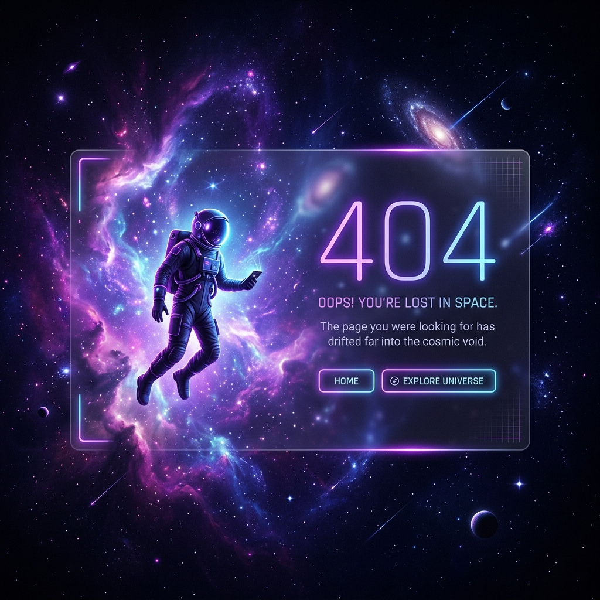

404
Lost in Space?
The page you are looking for has drifted away into the void. It might have been moved, deleted, or never existed in this dimension.
Return to Home
The page you are looking for has drifted away into the void. It might have been moved, deleted, or never existed in this dimension.
Return to Home